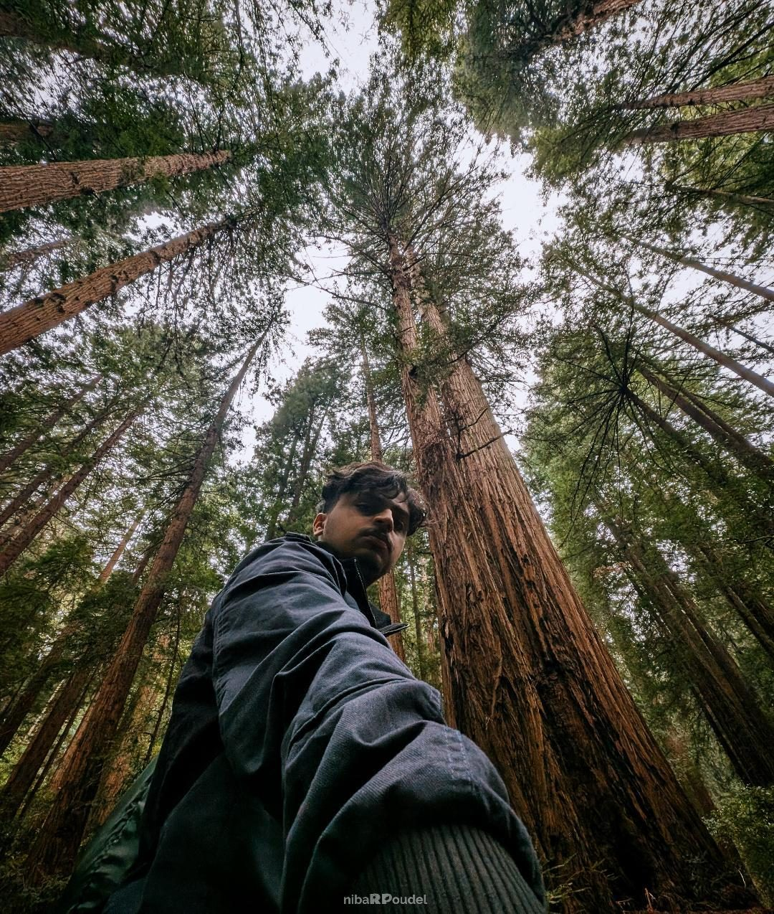
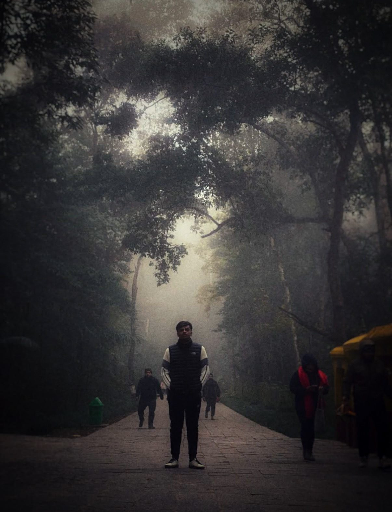
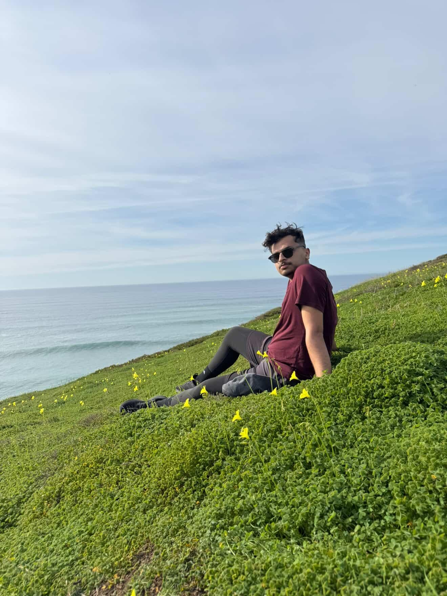

I'm Rabin, a photographer and a visual storyteller drawn to the moments that are easy to overlook. Photography for me is a way of paying attention- to changing light, movement, and the character of the place. From mist-covered paths and quiet landscapes to city lights and passing cars, I photograph whatever makes me stop and look twice. I'm still developing my style, experimenting with composition, motion, light, and editing. This website is a collection of that process- a visual diary of the places I've been, the moments I've noticed, and the stories I've found along the way.


